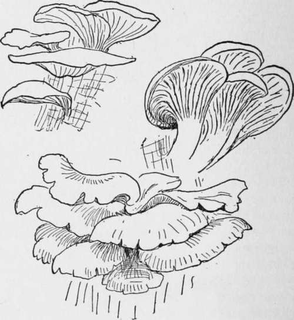
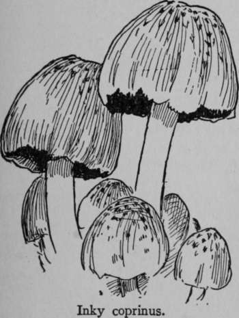
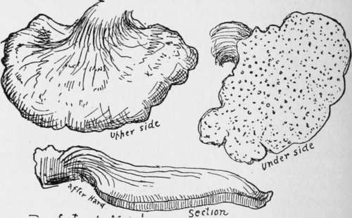
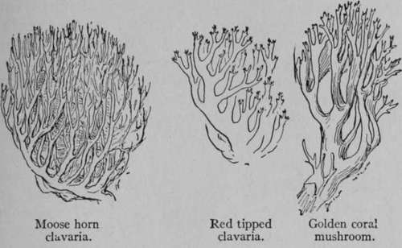
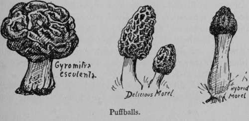
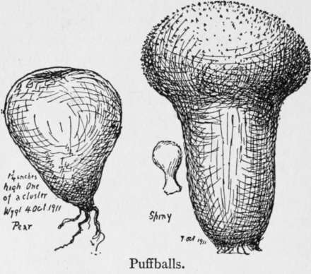
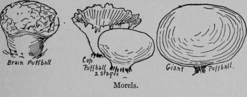

Wholesome Toadstools
Description
This section is from the book "The Book Of Woodcraft", by Ernest Thompson Seton. Also available from Amazon: The Book of Woodcraft.
Wholesome Toadstools
With all these warnings and cautions about the poisonous kinds before us, we shall now be able to approach in a proper spirit, the subject of Toadstool eating, and consider the second of our groups. These are the good safe Toadstools or Mushrooms - for it is the same thing.
Oyster Mushrooms.
The Common Mushroom (Agaricus Campestris)
Known at once by its general shape and smell, its pink or brown gills, white flesh, brown spores and solid stem. It grows in the open, never in the woods.
Oyster Mushroom (Pleurotus Ostreatus)
Many of us poisonous looking things should be good food. Yet all the authorities agree that the Ink-caps are safe, delicious, easily identified and easily cooked. There is no poisonous mushroom with black spores at present known in North America.
Inky Coprinus (Coprinus Atramentarius)
This is the species illustrated. The example was from the woods; often it is much more have oyster beds in our woods without knowing it, and the oyster mushroom is a good example of valuable food going to waste. It is found growing in clusters on old dead wood, logs or standing trunks. Its cap is smooth, moist and white or tinged with ash or brown. The gills and spores are white. The flesh is white and tough. It measures two or six inches across. Sometimes it has no stem. It is a favorite for the table. It needs careful cleaning and long cooking. There is no poisonous species at all like it.
Also, belonging to the Gilled or true mushroom family, are the Ink-caps of the Genus Coprinus. They grow on dung piles and rich ground. They spring up over night and perish in a day. In the last stage the gills turn into a black fluid, yes, into ink. At one time this was used for ink, a quantity of the black stuff being boiled and strained for the purpose. It is still a good scout dye for roots, quills, etc. The spores of Coprinus are black. It is strange that such tall and graceful. The cap is one to three inches in diameter, grayish or grayish brown, sometimes tinged lead color.
Stew or bake from twenty to thirty minutes after thorough washing, is the recognized mode of cooking it.
Beefsteak Mushroom (Fistulina Hepatica)
This juicy red mushroom grows chiefly on the chestnut stumps. In color it varies from strawberry red to liver brown, not unlike raw meat, paler below. When wounded it bleeds.
Beefsteak mushrooms.
Note that it has tubes, not gills, below. "When properly prepared it is equal to any kind of meat. It is one of our best mushrooms." (M. E. Hard.) Sometimes sliced and served raw as a salad.
All the Clavarias or Coral Mushrooms are good except Clavaria dichotoma which is white, and has its branches divided in pairs at each fork. It grows on the ground under beeches and is slightly poisonous and very rare.
The edible ones are of the types illustrated. They are yellow, buff or clingy brown; two to four inches high.
To cook Clavarias, Wash thoroughly, but do not peel. Fry or stew without salt, on a slow fire for half an hour, then add salt and other seasoning.
Morels
According to M. E. Hard the morels are easily known by their deeply pitted naked heads. All are yellowish brown when young; the stems are stout, hollow and whitish. McIlvaine & Macadam in discussing dangerous mushrooms, say: "Not one of the morels is even suspicious".
To Cook Morels
Thoroughly wash to remove all grit from the pits and crannies, slice and stew for an hour safe group are the Puffballs before they begin to puff. All our puffballs when young and solid white inside are good, wholesome food. Some of them, like the:
Puffballs (Ly-Coperda Ceae)
The next important and Brain Puffball or the Giant Puffball, are occasionally a foot in diameter, and yield flesh enough to feed a dozen persons. They are well known to all who live in the country, their smooth, rounded exterior without special features, except the roots, and their solid white interior are easily remembered. But one must take great care in gathering the very small ones as the poisonous toadstools in the button stage resemble small puffballs externally. However, a section shows the cap, stem, etc., of the former, whereas puff-balls are solid without any obvious inner structure. The principal kinds are these:
Pear Puffball (Lycoperdon Pyriforme)
Usually found in masses on the ground or on old timber. It is pinkish brown, and rarely over one inch in diameter.
Brain Puffball (Calvatia Craniiformis)
On the ground in woods. Pale grayish often with a reddish tinge, sometimes wrinkled on top, sometimes smooth. Commonly six to eight inches high.
Giant Puffball (Calvatia Gigantea)
Eight to twenty inches in diameter. McIlvaine found one weighing nine.
To Cook Puffballs
Wash clean, peel (other kinds are not peeled), cut out any discolored parts, slice and fry in lard or butter with seasoning.
Continue to:
Tags
bookdome.com, books, online, free, old, antique, new, read, browse, download